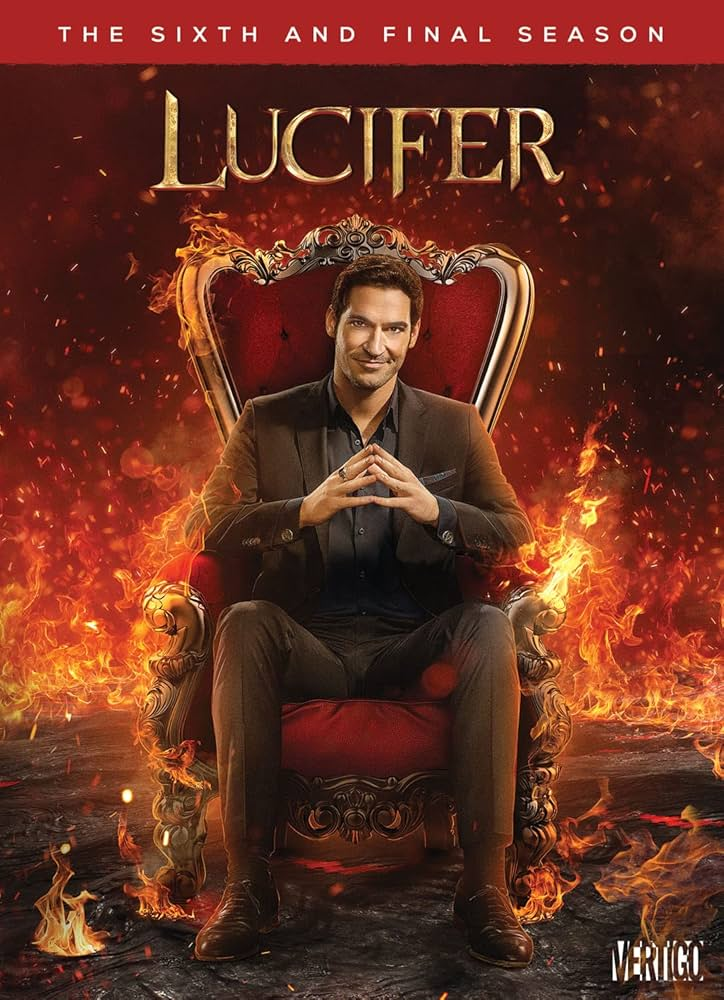

THE WITCHER
Temporada 1
Fantasia • Aventura • Épico
The Witcher acompanha Geralt de Rivia, um caçador de monstros solitário em um mundo medieval repleto de magia e perigos. Entre batalhas e intrigas, ele busca seu lugar enquanto protegido da jovem princesa Cirilla. Uma série mistura fantasia, ação e dilemas morais intensos.

The Witcher
Diretor: Alik Sakharov

O Senhor dos Anéis
Diretor: Peter Jackson

YOU
Diretor:

O Diabo Veste Prada
Diretor: David Frankel

La La Land
Diretor: Peter Jackson

Harry Potter
Diretor: Chris Columbus

IT a coisa
Diretor: Andy Muschietti

Lucifer
Diretor: Netflix